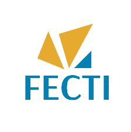
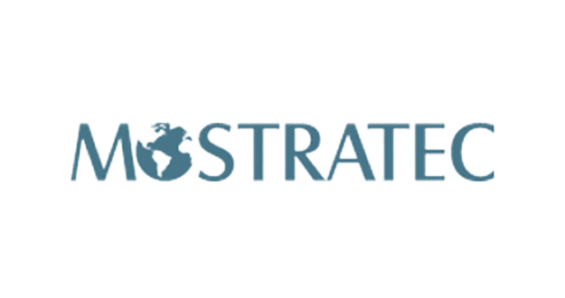

Sou Carlos Eduardo de S. Banjar, estudante de Ciência da Computação na UFRJ.
Meu ensino médio foi integrado ao curso técnico em informática no Centro Federal de Educação Tecnológica Celso Suckow da Fonseca (CEFET/RJ), campus Nova Friburgo.
Com esse portfólio, tenho o objetivo de organizar os projetos que fizeram parte da minha trajetória acadêmica na instituição.
Dentre as habilidades que eu conquistei, destaco:
Pacote Office
Programação em C++, JavaScript e PHP
Estilização em CSS
Marcação em HTML
Administração de banco de dados em MySQL
Experiência
CNPq, Bolsista de Iniciação Científica Junior
O trabalho intitulado MAPEAMENTO DE LITERATURA SOBRE FERTIRRIGAÇÃO E APP DE RECONHECIMENTO FOLIAR foi desenvolvido no período de JAN 2020 - DEZ 2020, sob orientação dos professores Anderson Fernandes Souza e Gisela Bochner.
Autores: Cauã Pascoal Santos Junger, Carlos Eduardo de Schuller Banjar e Ian de Aquino Bianquini
CEFET-RJ, Aluno voluntário
O trabalho intitulado Estudo de viabilidade: Education and Media Delivery através de servidor de arquivos Wi-Fi de baixo custo em comunidades carentes, afastadas e de zona rural se desevolveu no período de AGO 2021 - DEZ 2021, sob orientação do professor Daniel Gomes.
Autores: Carlos Eduardo de Schuller Banjar, Maria Clara Adame Barros Sanglard e Mariana Antônio Veiga Faria
Participações
Feiras de Ciências e Mostras Científicas

FECTI XIII - Categoria "Ciências Biológicas & da Saúde
6 e 7 de dezembro de 2019
Apresentação do trabalho MAPEAMENTO DE LITERATURA SOBRE FERTIRRIGAÇÃO E APP DE RECONHECIMENTO FOLIAR. Premiado em segundo lugar da categoria.
Autores: Cauã Pascoal Santos Junger, Carlos Eduardo de Schuller Banjar, Ian de Aquino Bianquini
FECTI XIV - Categoria "Interdisciplinar"
2 a 5 de dezembro de 2020
Apresentação do trabalho MAPEAMENTO DE LITERATURA SOBRE FERTIRRIGAÇÃO E APP DE RECONHECIMENTO FOLIAR. Premiado em terceiro lugar da categoria.
Autores: Cauã Pascoal Santos Junger, Carlos Eduardo de Schuller Banjar, Ian de Aquino Bianquini

Mostratec 2020 - Categoria "Biológicas e ciências naturais"
9 a 11 de dezembro de 2020
Apresentação do trabalho MAPEAMENTO DE LITERATURA SOBRE FERTIRRIGAÇÃO E APP DE RECONHECIMENTO FOLIAR.
Autores: Cauã Pascoal Santos Junger, Carlos Eduardo de Schuller Banjar, Ian de Aquino Bianquini